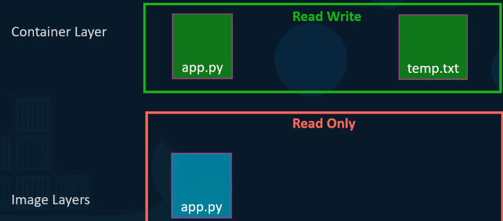

Parleremo di Docker Storage & FileSystems.
Nella cartella /var/lib/docker è la cartella di default dove Docker conserva tutti i suoi dati.
Qui vengono dati relativi alle immagini, container, volumes etc.

Quindi: come viene salvato un immagine di Docker o un Container?
Per farlo, dobbiamo parlare della Docker Layered Architecture.
Nell'esempio che vediamo:
Con un primo Dockerfile, creiamo un'immagine.
Col secondo, essendo che i primi layer sono uguali a quelli del Dockerfile precedente,
non viene usata altra memoria addizionale: già esistono questi layer!
Quindi Docker riutilizza i layer già creati in precedenza.

Cerchiamo di capirne di più.
Il Layer dell'Image è read-only.
Per questo, Docker crea un layer RW dove scrivere tutte le impostazioni,
ovvero nella cartella di Docker!
NB: Questo Container Layer esiste finché non esiste in Container!
Appena viene distrutto, questo layer coi suoi dati viene distrutto.

Quindi: se vogliamo fare dei cambi all'image?
Possiamo farli, ma in modo temporaneo (finché il Container vive)
con COPY-ON-WRITE dall'Immagine RO nello spazio RW.
Qui facciamo tutte le modifiche che vogliamo nel Container Layer.

E se vogliamo salvare i dati di un Container da qualche parte?
Per questo possiamo creare ed attaccare al Container un VOLUME.

Possiamo attaccare il Volume tramite l'opzione "-v":
Mappiamo una cartella del Docker Host con una del Container,
in modo che si salvi tutti i dati che il Container scive nella sua cartella!

Questo attaccherà il VOLUME al Container e salverà i dati lì.

E che succede se il VOLUME non esiste?
Lo creerà uno nuovo, col nome scelto.

E che succede se vogliamo il VOLUME in una cartella differente da quella di default?
Possiamo dargli l'intera path al volume che vogliamo montare:
Questo viene detto "Bind Mounting", ovvero montare la cartella da una path che decidiamo noi.

Per trovate tutti i VOLUME, basta listare la Volume folder di Docker.
L'operazione di montare i Volume si chiama "Volume Mounting" o "Bind Mounting",
a seconda della path sia in Volume o sia definita in modo diretto.
Cosa permette tutta questa architettura su Docker?
Gli "Storage Drivers".
Ad esempio: Ubuntu di base usa UFS. Nel caso più generico sarebbe meglio usare Device Mapper.